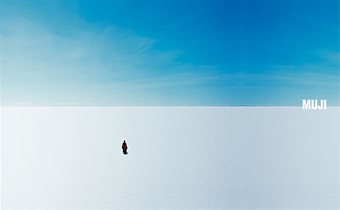

INTRODUCTION
Learning from new cultures and their traditions bring an endless amount of inspiration and provides new perspectives to look at the world. Marcel Proust said: “there is a beauty in being surrounded by the foreign – seeing things from a new perspective, with ‘new eyes’”. Our cultural values and our background hugely influence the way we perceive the world and that opening to a different cultural tradition is beneficial. For a long time already I have been drawn to Japanese culture. During my exchange in Aalto University, Helsinki, I spent most of my semester following Japan-related courses such as Japanese watercolor woodcut, Ukiyo-e, bookbinding and packaging design. One of my professors at Aalto became an inspiration for this thesis by describing an aesthetic concept from Japan that has a worldview opposite to the Western world. It finds beauty in the most unusual places like emptiness, mundane everyday objects, and things so subtle and desolate we do not normally even realize them. Reading more about it turned my worldview upside down. Personally I find a lot of the Japanese ideas fascinating, because even though they are ancient ideas, they could still be very valuable in today’s world. It is interesting to how Japan, being one of the most technologically developed countries, still has a prevailing traditional side. In this thesis I want to investigate what exactly makes the Japanese aesthetics so distinctive from rest of the world and why this kind of simplicity is so powerful and inspiring. With the diminishing cultural values in our contemporary society and the heavy influence from the dominating Western design, are there still traces of the Japanese aesthetics in contemporary design? If so, how are they implemented? Japanese graphic designer and author Kenya Hara states: “today, we seem to be experiencing a rationalization of the senses. The art of refinement has been half-forgotten, and attentiveness to detail, absorption, and slow engagement are neglected.” The statement applies to today’s world, with its overwhelming and constantly accelerating consumer and material culture, fast paced lifestyles and that we tend to neglect and take the everyday things around us for granted. Also, the Internet culture is flattening our aesthetic sensibility to an extend, and a lot of times trends are being copy-pasted over and over again instead of looking for new innovative solutions. Our graphic design education predominantly concentrates on Western design, so therefore it is interesting to learn about the practice from other parts of the world. I want to investigate what could we learn from the Japanese ideas and how could they be valuable not only in contemporary graphic design but in society in general. This thesis will investigate the qualities and values of traditional Japanese aesthetic concepts and analyze their presence and significance in contemporary design. I want to find out where these aesthetic values are originating from; how did the discovery of simple beauty come about and what makes it so distinctive from rest of the world? This research will analyze these matters in the context of the work of contemporary designer Kenya Hara among other notable Japanese designers. By analyzing “Void” by the architect Tapio Periäinen, I would also like to explore the importance of the ideology from an ecological point of view against our wasteful habits of consumption and present ideas of how could contemporary (graphic) design benefit from the ultimate simplicity.
CHAPTER 1:
Leonard Koren, the author of “Wabi-Sabi for artists, designers, poets and philosophers, states that the traditional Japanese ideas of aesthetics portray an exact opposite of Western, especially American, ideal of the ultimate beauty. According to him, in most of the Western world the conventional beauty is something monumental, durable and spectacular whereas in Japan beauty is seen in the subtle and simple things and on the banal everyday matters. The core of Japanese aesthetics is refined simplicity, emptiness most specifically. The Japanese have philosophy called Ma that describes and gives shape to void and nothingness. This concept is not much researched is Western word and we do not even have a word or a term for it. In the West, nothingness usually has a negative connotation and it’s meaning is overlooked. These Japanese aesthetic concepts are so intriguing because of their distinctiveness from rest of the world. They are deeply rooted in the Japanese history and culture, starting from the Heian era in the 15th century. West has an immense influence on the modern Japanese culture, and together with the influence from the East, they have played a big part on shaping it as it is seen today. What is intriguing is that even though there is a predominant mix of elements from both worlds, Japan still managed to develop and preserve recognized and distinctive traditional aesthetics. The Japanese have numerous aesthetic concepts that even the Japanese have trouble of explaining in words. These concepts include Ma and Wabi-Sabi, that all depict a different kind of beauty. The common ideology of theses concepts are that beauty can be found in the most unexpected forms. Shortly, Wabi-Sabi characterizes rural and desolate beauty and Ma, an empty and formless beauty and sees emptiness as the ultimate simplicity. Wabi-Sabi is the most apparent and characteristic feature of what is seen as a traditional Japanese aesthetics. The Wabi-Sabi ideas are closely linked to Zen Buddhist thoughts but also can be traced to the earliest examples of Japanese literature. Wabi-Sabi is not just a specific aesthetic concept, but it could serve as a way of life of ignoring material hierarchy and finding glory in the mundane. Wabi-sabi depicts refined simplicity and imperfect beauty (wabi) and the celebration of that which is crude, faded and dark and hidden beauty (sabi). It accepts that life is only temporary. According to Wabi-Sabi, beauty can be found in the most unconventional, minor and hidden matters. It is everything that today’s sleek, mass-produced, technology-saturated culture isn’t. “Wabi-Sabi is the beauty of the imperfect, impermanent, incomplete, modest, humble and the unconventional. Wabi-sabi objects are earthy, simple, unpretentious and made out of natural materials.” Wabi-Sabi understands the tender, raw beauty of a gray December landscape and the aching elegance of an abandoned building or a shed. It is not the magnificent sakura trees blooming, but the process of the leaves withering away. It celebrates cracks and crevices and all the other marks that time and weather and use leave behind. In order to appreciate the Wabi-Sabi beauty, one needs a different mindset, because things may first look ugly. “Wabi-sabi is not about gorgeous flowers, majestic trees, or bold landscapes. It is about the minor and the hidden, the tentative and the ephemeral: things so subtle and evanescent that they are invisible to the vulgar eyes.” By learning to appreciate or at least to understand Wabi-Sabi could be an eye opener. It could remind us that we are all transient beings on this planet that our bodies, as well as the material world around us, are in the process of returning to dust. Wabi-Sabi teaches us to learn to embrace both the glory and the melancholy found in these marks of passing time. All though both of them embrace simplicity, Wabi-Sabi is the opposite of modernism. Wabi-Sabi is human and nature-oriented where as modernism is technology oriented. Modernism strives for enduring and man-made things where as Wabi-Sabi is about natural materials and not necessarily temporary. An example of Wabi-Sabi aesthetics can be seen, for example, in the mundane every day objects, and things evanescent. Emptiness is the basic concept of Japanese aesthetics. A Finnish architect Tapio Periäinen explains in his book “Void” the meaning of “Ma” by “being the pure and essential void between all things” and the ultimate simplicity. It sees nothingness as the center and origin of everything and a space towards things evolve and come from. This mentality is something Westerns have difficulties to grasp. In the West an empty space is just an empty space, and there is no such concept as “Ma” to describe it. Periäinen claims that an empty room is infact not empty; it is a room full of possibilities. To describe the meaning of “Ma”, Periäinen uses the Japanese flag as an example. As known, the flag has a red circle in the middle and nothing around it. He also explains that Ma is basically the pauses in speech, which make the words standout. It is the white space around letters that enables the shape to exist. An empty white canvas gives the possibility to start drawing. “It is the purposeful pauses in speech, which make the words stand out, and it is the quiet time we need to make our busy lives meaningful. It is the silence between the notes, which make the music, and MA is what creates the peace of mind we all need, so that there is room for our thoughts to exists properly.” Ma is visible in a great deal of Japanese way of living. It is seen in the architecture, garden design, music, flower arrangements, calligraphy and poetry. It is basically a way of life, and not just a philosophical and artistic concept. Japanese houses have certain serenity and peacefulness to them, and it is due to the predominant presence of emptiness. A Japanese house supports the elimination of all that is considered as unnecessary. To the eyes of a Westerner, Japanese houses may seem as extremely modest. The houses have only little space with very minimal furniture with lots of emptiness. However, they are still functional. It makes one wonder whether all the material possessions we have are after all necessary and could we do with less? As an example, most Japanese rooms do not have beds or even shelves. A lot of the stuff is kept on the floor. People sleep on tatami mats, which in the morning would be placed in the closets and the room would have more space to do daily chores. Ma and Wabi-Sabi concepts and this kind of ultimate, almost primitive, simplicity can be seen in the traditional Japanese tea ceremony. “Although Wabi-Sabi quickly permeated almost every aspect of sophisticated Japanese culture and taste, it reached its most comprehensive realization within the context of the tea ceremony”. A Japanese traditional tea ceremony takes place in a completely empty room, apart from the things that may be placed there temporarily, such as a flower arrangement. (more about tea ceremony) According to Kenya Hara the West of simplicity exists only for a little amount of time compared to Japan. It seems as if we need to have all this material in our surroundings to fill the void and to create meaning in our lives. This can be seen especially in most Western interior design, where we have the need to cover our walls with paintings and frames and tables filled with decoration objects. Periäinen questions weather it the fear of void built into all people, or is it a phobia brought about by the development of the conception of the world? (more) In the past we needed this kind of extravagancy to demonstrate the power of the king or an emperor. Japa¬¬nese culture is partly an exception to this: the space of living housing and interior decoration is based on void, which is seen as a positive quality. This makes me think of another exception that embraces simplicity and “white”; Scandinavian design. “During the Heian era, Japan rejuvenated its focus on the natural world, embracing its unpredictable and instable nature and adopting sympathy to and appreciation for nature.” The burning of the temples and loss of everything could justify the origin of their aesthetic preference and be an indication of the Japanese mentality; acceptation of things as they are… and coming to “agreement” with nature”. Japanese aesthetics praise the natural aspects of things… Lauren Prusinski says that “the Japanese have a keen eye for their surroundings and have effectively mended ancient aesthetics with modern advancement postponed to their natural roots by highlighting rather than withdrawing their eternal presence in society.” The high contrast between technology and nature, and the contrast between Western consumer influence and the pure Japanese traditions is very intriguing. Immense and tremendously busy cities such as Tokyo and Osaka are filled with material hysteria, but when entering the rural countryside’s or temples in places like Kyoto or Nara, one is bound by serenity and serenity. The Japanese have a quite humble and traditional architecture and way of life. Even though the contrast between the urban and the rural is so distinctive, there is something about the opposing elements that seem to fit perfectly and complement each other’s and form a harmonious blend of the contrasts. For instance, the various temples and gardens spread around the urban areas still demonstrate the Japanese consciousness of her relationship with nature. The environment that surrounds these manmade temple spaces enhances the unnatural qualities—without nature they would simply be cold, unearthly structures isolated from their surroundings.CHAPTER 2:
The Japanese traditional aesthetics values are very visible in the contemporary Japanese design. Rem Koolhaas stated that modernity would kill all the cultural traditions. That being said, Japanese design is very unique in a sense that it uses the old traditional ideology and transforms and updates it into a new context.
Japanese graphic designer, a curator and the art director of Japanese house brand Muji, Kenya Hara states that minimalism is the most comfortable way for Japan to face the world. Hara is a really valuable as a Japanese designer due to his ability to articulate a clear philosophy about Japanese design that is sensitive to the present as much as it is to the past. He is seen as the future of Japanese design. He believes that Asian countries have a key cultural resource that cannot be found anywhere else in the world and that “Lifestyle has value in Asia”. “The Swiss have their cheese, the French their wine, but Hara’s future Japan will be based on the export of a way of life.”
Hara’s design aesthetics are profoundly related to the basic concept of Japanese aesthetics of emptiness. One of Hara’s books “White” is entirely dedicated on this subject matter. The book explores the essence of white, which is closely related to the origin of Japanese aesthetics that symbolizes simplicity and subtlety. The central concepts discussed in “White” are emptiness and the absolute void. White and emptiness are closely intertwined and the concept if empty space brings those two things together. Hara melds everyday observations with reflections on Japanese aesthetics and sensitivity, he also amplifies the need to critically revise our understanding of the senses. He challenges the simplifications that inform much present day thought concerning what can be felt, experienced, and emotionally negotiated.
Hara believes that a good design creates another way of looking at something and “never looking at a plate or a cup in quite the same way again”. Hara views this kind of thought process as an “awakening” that deepens our understanding of the objects in question. “This is what I mean when I say design should make the known become unknown.” Hara’s work centers questions such how to look at things in an unfamiliar perspective such as using a nonhuman scale. What could common daily products become if they were redesigned? How can we design for all five senses? Hara’s work “what do macaroni and architecture have in common?” His work that joins macaroni and architecture does exactly that.
Hara’s ideas are valuable because they make us question everything around us. The perspectives of his work awaken our senses from our numbness and after that we won’t look at the world quite the same way again. The society would benefit from a new perspective of looking at things. We take things around us for granted and I believe that design could make people see the mundane everyday objects in a new light.
Designers have the ability of manipulating reality and present ordinary matter in a new light. Kenya Hara’s work does exactly that. Hara sees graphic design as a form of communication putting emphasis on the value of emptiness in communication. “The mechanism of communication is activated when we look at an empty vessel, not as a negative state, but in terms of its capability to be filled with something.” He writes about the power of non-verbal communication such as a nod or eye contact that can convey so much. Japanese way of communication is full of emptiness; subjects of sentences are often left unsaid. Words are not always necessary in a conversation. The Western style of communication is more direct and in most countries, especially in the US, find a silence in a conversation rather awkward and therefore they have a need to keep the conversation going. Hara views people reaching a harmony in silence to be a highly refined level of communication. Listening is a crucial part of effective communication, and this applies also to design; “a Good communication has the distinction of being able to listen to each others, rather than to press one’s opinion onto the opponent.” His work “…” supports this ideology clearly. A good design should not impose ideas and opinions onto its viewer; instead it should leave room for interpretation and the viewer to experience the work. “Hara compares this kind of communication with an empty container. In visual communication, there are equally signals whose signification is limited, as well as signals or symbols such as the red circle on the Japanese flag, which is like an empty container – permit every signification and do not limit imagination” Hara points out the importance of removing all the decorations and everything that is unnecessary. By doing this design does not become poorer, but better. This view is directly linked to the traditional ideas of refined simplicity and the complete lack of everything unnecessary. Hara is the founder and an art director of the Japanese “no brand” Muji .
Muji’s aesthetics and ideology is directly connected to the Japanese aesthetics of simplicity. It is distinguished by its minimalism and respect towards nature. It emphases on recycling and avoids waste in production and packaging. It also emphases on no-logo or “no-brand” policy which means that only a little amount of money is used for marketing and advertisement. Muji’s design style has been described to have “mundanity, and being “no-frills” and “minimalist” and also as “Bauhaus-style” . Muji’s product design, brand identity, is based around the selection of materials, efficient manufacturing processes and minimal packaging. Muji products have a limited color range that is very natural. The image of a man standing in a great emptiness pretty much summarizes the ideology of Muji. He looks so tiny and humble amongst the void, which fits in with their ideology that man is not the center of the world, but equal to everything.
